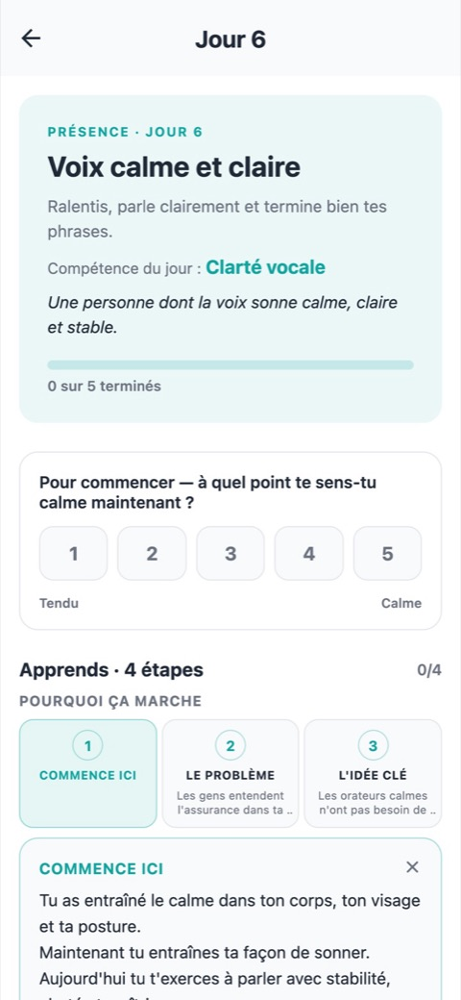
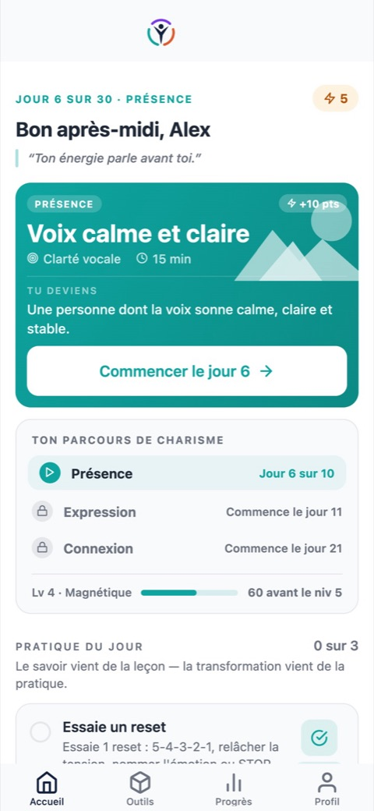
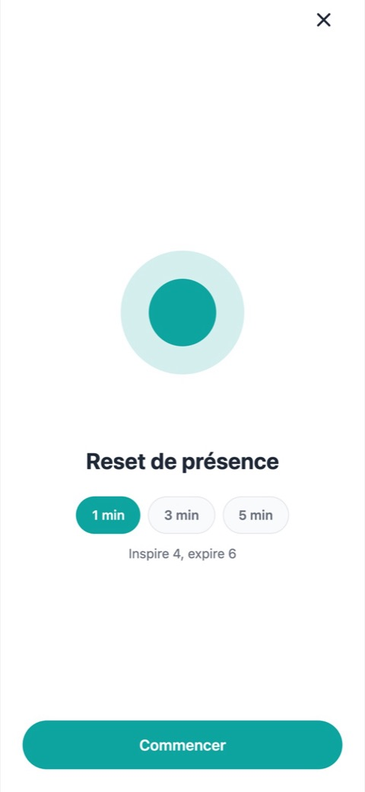
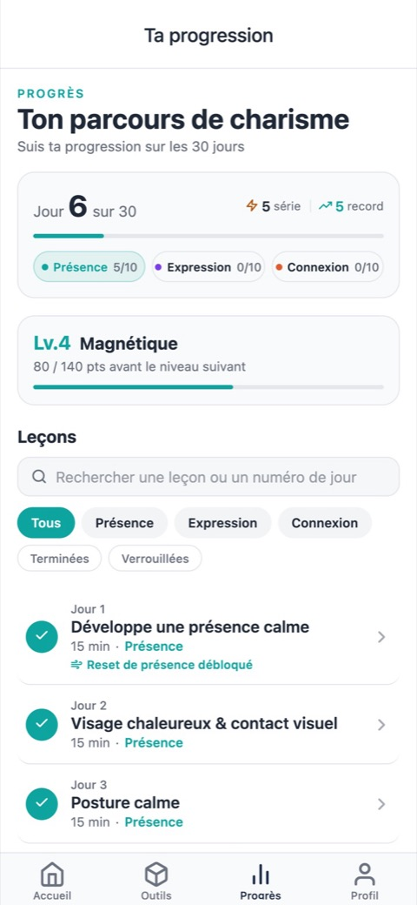

Jours 1–10
Présence
Un corps calme, un regard posé, une voix qui ne se précipite pas. La base que les autres ressentent avant même que tu parles.
- Développe une présence calme
- Posture calme
- Voix calme et claire
30 jours · 3 compétences · gratuit
Charisma30 transforme la présence, l'expression et la connexion en une courte leçon et une petite pratique par jour, pour que le changement dure.
 Bientôt disponibleApp Store
Bientôt disponibleApp Store
Gratuit. Sans compte.


Trois compétences, dans l'ordre
On ne commence pas par les discours en public. On commence par se sentir stable dans son corps, puis on apprend à se faire entendre, puis à faire en sorte que les autres se sentent vus.
Un corps calme, un regard posé, une voix qui ne se précipite pas. La base que les autres ressentent avant même que tu parles.
Dire ce que tu penses, clairement et de façon crédible. Les pauses, les histoires, aller à l'essentiel, et garder l'attention d'un groupe.
Lire les gens, écouter les émotions, être en désaccord avec respect. Ce qui transforme l'attention en confiance.
Une journée type
Chaque jour suit le même rythme simple : en ouvrant l'app, tu sais toujours quoi faire.
Avant la leçon, note ton ressenti de 1 à 5. Tu le notes à nouveau à la fin et tu vois la différence.
Une courte leçon guidée en étapes claires, avec des cartes mémo et un petit quiz pour l'ancrer.
La leçon terminée débloque de petites habitudes à répéter dans la vraie vie les jours suivants.
La leçon suivante se débloque le lendemain. Pas à pas, le charisme devient naturel.
Tes outils
Certaines leçons débloquent un outil réutilisable. Ouvre-le quand tu veux : avant une réunion, un rendez-vous ou un appel difficile.
Une respiration guidée (inspire 4, expire 6) de 1, 3 ou 5 minutes. Se débloque le jour 1.
Un court reset contre l'anxiété, la tension ou la surcharge : les 5 sens (5-4-3-2-1), relâcher la tension, nommer l'émotion, ou STOP. Se débloque le jour 5.

Des progrès visibles
Gagne des points avec les leçons et les pratiques, monte de niveau, garde ta série et vois exactement où tu en es dans chaque étape.

Les 30 jours
Aucun doute sur la suite. Voici toutes les leçons du programme.
Confidentiel par conception
Ouvre l'app et commence. Pas d'inscription, pas d'e-mail, pas de mot de passe.
Tout est enregistré sur ton appareil. Aucun serveur, aucune synchronisation.
Aucun outil d'analyse, aucune régie publicitaire, aucun traceur tiers.
Questions
Oui. L'app est gratuite à télécharger et à utiliser, sans publicité.
Une courte leçon et de petites pratiques à glisser dans ta journée. En général, quelques minutes pour les pratiques et environ un quart d'heure pour la leçon.
Tu ne perds rien. La leçon suivante t'attend et tu reprends là où tu en étais. Ta série repart à zéro, pas tes progrès.
Non. Il n'y a pas d'inscription. Ton nom, tes progrès et tes habitudes restent uniquement sur ton téléphone.
En français, en anglais et en italien. Tu peux changer de langue à tout moment dans Profil → Langue.
Non. Charisma30 n'envoie tes données nulle part et n'utilise aucun service d'analyse ni de publicité. Tu peux tout effacer à tout moment dans Profil → Réinitialiser la progression.
Dans trente jours, tu entreras dans une pièce autrement.
Bientôt disponibleApp Store
Gratuit. Sans compte.